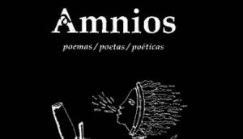

Di: Pedro López Cerviño.Hacer hoy, imagino en cualquier parte del mundo, una revista de poemas/ poetas/ poéticas, más que una utopía irrefrenable de unos pocos pudiera constatarse como el intento de permanecer el misterio de la creación como un doloroso tatuaje en la piel de los tiempos.
En mi país, urgido de tantas constantes emergencias más bien materiales, alternativas económicas, modelos que se actualizan, empresas que emergen, predominio del mercado, anche, de hecho, riesgos latentes de que la cultura deje de ser el sueño que soñamos en las justificaciones para la abulia en proyectos del espíritu, hacer esta revista es obra de colosal y bendita terquedad para bien de la esencia de la nación y lo que nos toca a cada cual de ese sustrato imprescindible.
Y no es que ni poemas ni poetas ni poéticas hayan desaparecido. De ello se trata esta revista que tras casi un lustro de afanes titánicos hace su doceava entrega con la misma vocación de horizonte conque aquella primera abriera los caminos de Amnios con obras de Fina García Marruz, Saint John Perse, Alejo Carpentier, Roberto Fernández Retamar, Raúl Zurita y Donald Hall, entre otros a lo largo de sus hoy sostenidas 160 páginas.
La amniopresencia de ilustrar sucesivas ediciones con obras de, como ya se ha dicho, quienes se acercan a la literatura desde la imagen o a la imagen desde la literatura, nos regala hoy en su cubierta e interior, las viñetas magníficamente oníricas del gran Víctor Hugo. Sus dibujos nacidos como de la mancha de tinta, fantasmagóricos y de una contemporaneidad que casi asusta, son, no el añadido al deleite sino un suceso difícilmente repetido en nuestros lares.
Casi un centenar de poemas y media docena de breves estudios teóricos siempre en la mira de la poesía conforman esta vez la amalgama de Amnios donde la presencia junto a cubanos –esos del patio frondoso de casa- de un par de norteamericanas, una colombiana, un francés, un argentino, un barbadense, un luxemburgués y un rumano dan fe de la vocación diversa de latitudes geográficas y poéticas. Múltiples tiempos y edades se dan cita en las páginas generosas de temas y tendencias. Plurales como la vida misma.
Llenar vacíos parece ser oficio amniótico. Trascender también hacia lo menos visible y reconocido en un país/planeta de tantos poetas algunos con más o menos suerte editorial, más o menos anuencia de los círculos de poder literario, más o menos lectores, más o menos trasgresión, pero siempre con la valía de una calidad como cláusula primera.
Capítulo aparte debieran merecer, en esta entrega, los escritores Manuel García Verdecia, Adelaida de Juan, Víctor Rodríguez Núñez y Jorge Miralles, Darie Nováceanu y Jesús David Curbelo a quienes, tras sus traducciones, algunos debemos la dicha de leer lo conocido y lo desconocido.
Abriendo páginas Manuel García Verdecia, el holguinero poeta y narrador nos presenta con emotiva hondura a la poeta norteamericana Anne Sexton . Cinco de sus poemas trazan como en un mapa la difícil desgarradura de su vida y, sin indulgencia, respiramos, con ella, algo del gas carbónico de su temprana muerte.
En dos momentos iniciales para el ensayo crítico desprejuiciado y aleccionador la conocida Margaret Randall nos abunda en breve ensayo sobre la poesía de mujeres del siglo XX en Estados Unidos y nuestra Caridad Atencio, con fina agudeza, nos regala un estudio de El remoto país imposible de Damaris Calderón que publicara el pasado año Ediciones Matanzas.
Norge Espinosa abre las hojas dedicadas a los poemas estremeciéndonos entre ellos con el ya clásico Vestido de novia y su vigoroso y terrenal Poema de situación. De Norberto Codina, decano director de la Gaceta, Amnios nos ofrece una selección de sólidos textos que nos redescubren al poeta que habita en la inquietud perenne de “la sombra del niño que fuimos”.
Amnios alista huestes de poetas: la joya engarzada con la mágica pericia del orfebre que es la poesía de Doña Georgina Herrera. Es ella, desde su panteón, puntal alto de la revista que cierra su dossier del año. Extenso y depurado poema de Jesús Barquet, dialoga con las eternidades en su Reclamo a Orfeo y los poemas de Antonio Gutiérrez, Antonio Borrego, ambos de Las Tunas, el niquerense Alexander Besú en su dominio del soneto, Lionel Valdivia desde el Camaguey mediomilenario y Alberto Rocasolano con sus versos anchos, tropel de lo inasible.
Otro de los picos en la aventura de leer esta entrega de Amnios lo es. A mi mirar, el conjunto que propone Leyla Leyva: seis poemas como vértebras de una mujer que palpita en los fragores de los fuegos cotidianos. Entre tanto Enrique Saínz explora agradecido los dísticos del poeta Pedro de Oraá siempre con la sapiencia comprometida del crítico certero.
Y cierra esta zona de lo cubano los poemas del siempre presente Paco Mir, el banense-pinero, el que hoy es árbol salvado del naufragio, uno de los más extraordinarios poetas de su generación presentado con amor y oficio por Roberto Manzano.
La entrevista a la poeta y narradora colombiana Piedad Bonnett a cargo de Alpidio Alonso y Alex Fleites abre un segundo momento de la revista. Y por supuesto casi un cuaderno de la Bonnett donde aparecen no por casualidad, tra gli altri, siete de los que confiesa, poemas preferidos.
Hermosa la suerte de breve biografía novelada de Vallejo deliciosamente escrita por Jorge Boccanera y le prosigue el barbadense Kamau Brathwaite con su poema homenaje Retamaar. Poema bitácora de una amistad sostenida y sincera que escribiera Brathwaite en la hojarasca otoñal de Nueva York hace ya una docena de años.
Confieso que tampoco conocía yo a Jean Portante de manera que su poema De lo que adviene… me abrió las puertas del solsticio de Capricornio. Del rumano Lucian Blaga tres poemas breves que dan fe de toda su estatura.
Y el gran Victor Hugo, il poeta, el de los asombros, el de la luz que alumbra y enceguece con un conjunto de poemas entre los cuales Después de la batalla… que recomiendo leer o releer supongo nos hará encontrarnos en algún sitio, no lugar sino destino, con la grandeza de su cepa.
Cierra casi la revista doce un ensayo sobre los versos libres de Martí escrito por Manzano hace más de tres lustros y que tiene la tinta aún fresca sobre la cálida blancura del papel.
Por último, la consabida Entrepáginas con brevísimas reseñas de obras de Jamila Medina, Luís García Montero, Jorge Luís Arcos, Raúl Zurita y Edgar Hirsch.
Del recuento de mi primera lectura conque pretendo enamorarlos de la Amnios doceava no queda casi nada excepto agradecer a sus hacedores Alpidio Alonso Grau, fondatore, director y además editor de este número, Alex Fleites como asesor de arte, Ricardo Villares a cargo del diseño y Nelis Salas en la producción. Son ellos una minúscula tropa agigantada por la excelencia de la obra que llevan a cabo cada día a pesar de todo. Como si en ello les fuera la vida.
Enero 2014.